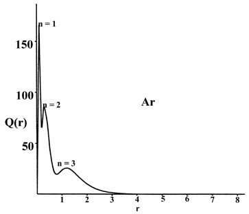

An Introduction to the Electronic Structure of Atoms
and Molecules
Dr. Richard F.W. Bader
Professor of Chemistry / McMaster University / Hamilton,
Ontario
|
Horizontal Variations
The experimental values of the atomic radii and the first and second
ionization potentials of the elements (labelled as I1
and I2 respectively) in the third
row of the periodic table are listed in Table 5-1.
A study of these values will indicate the basic trends observed as the
number of electrons is increased one at a time until all the orbitals with
a given value of n are fully occupied.
Table 5-1.
The Atomic Radii and Ionization Potentials* of Third Row Elements
| Element |
Na |
Mg |
Al |
Si |
P |
S |
Cl |
Ar |
| Radius (Å) |
1.86 |
1.60 |
1.48 |
1.17 |
1.0 |
1.06 |
0.97 |
|
| I1 (ev) |
5.14 |
7.64 |
5.98 |
8.15 |
11.0 |
10.4 |
13.0 |
15.8 |
| I2 (ev) |
47.3 |
15.0 |
18.8 |
16.3 |
19.7 |
23.4 |
23.8 |
27.6 |
*The values for I1 and
I2
are taken from C. E. Moore, Atomic Energy Levels, Vol. 1, N.B.S.
Circular 467, Washington, D.C. (1949).
I2
is the energy required to remove an electron from the singly-charged ion,
i.e., the energy required to ionize a second electron.
Atomic radii
The diameter of an atom is difficult to define precisely
as the density distribution tails off at large distances. However, there
is a limit as to how close two atoms can be pushed together in a solid
material. We shall take one half of the distance between the nuclei of
two atoms in an elemental solid as a rough measure of the atomic radius.
Any consistent method of defining the radius leads to the same trend we
see in Table 5-1. The size of the atom in general
decreases as the number of electrons in the quantum shell is increased.
This observation, which at first sight might appear surprising, finds a
ready explanation through the concept of an effective nuclear charge.
The electric field and hence the attractive force
exerted by the nucleus on an electron in the outer quantum shell is reduced
because of the screening effect of the other electrons which are present
in the atom. An outer electron does not penetrate to any great extent the
tightly bound density distribution of the inner shell electrons. Consequently
each inner electron (an electron with an n value less than the n
value of the electron in question) reduces the value of the nuclear charge
experienced by the outer electron by almost one unit. The remaining outer
electrons on the other hand are, on the average, all at the same distance
away from the nucleus as is the electron under consideration. Consequently
each outer electron screens considerably less than one nuclear charge from
the other outer electrons. Thus the higher the ratio of outer shell to
inner shell electrons, the larger will be the "effective nuclear charge"
which is experienced by an electron in the outer shell.
All of the elements in a given row of the periodic
table possess the same number of inner shell electrons. For example, the
elements in the third row have the inner shell configuration of 1s22s22p6.
As we move across the periodic table from left to right the nuclear charge
increases, and each added electron is placed in the outer shell until a
total of eight is reached and the quantum shell is full. The number of
outer shell electrons increases along a given period, but the number of
inner shell electrons remains fixed. Thus the effective nuclear charge
increases from a minimum value for sodium, where the ratio of outer shell
to inner shell electrons is 1:10, to a maximum value for argon where the
same ratio is 8:10. The atomic radius undergoes a gradual decrease since
the outer electrons become more tightly bound as the effective nuclear
charge increases.
These features of the atomic density distributions
are clearly evident in a graph of the radial distribution function, Q(r).
This function, it will be recalled, gives the number of electronic charges
within a thin shell of space lying between two concentric spheres, one
of radius r and the other with a radius only slightly larger. The
radial distribution functions for atoms may be determined experimentally
by X-ray or electron diffraction techniques.
Plots of Q(r) versus r for sodium
and argon (Fig. 5-1), the first and last members
of the third row of the periodic table, clearly reveal the persistence
of a "shell structure" in the many-electron atoms.

Fig. 5-1. The radial distribution functions
Q(r)
for the Na and Ar atoms.
There are three peaks in the density distribution corresponding to the
presence of three principal quantum shells in the orbital model of the
electronic structure of sodium and argon. The peak closest to the nucleus
may be identified with the charge density in the 1s orbital, the
middle peak with that in the 2s and 2p orbitals and the outer
peak with the charge density in the 3s orbital in sodium and in
the 3s and 3p orbitals in argon. The maxima in Q(r)
occur at smaller values of r for argon than for sodium as expected
on the basis of a larger effective nuclear charge for argon than for sodium.
Most of the 1s charge density is found within a very thin shell
close to the nucleus in both cases as the inner shell density experiences
the field of the full nuclear charge, ZNa
= 11 and ZAr = 18. The charge density in
the n = 2 orbitals is confined to a shell which is narrower and
closer to the nucleus in argon than in sodium. The electrons in this second
shell experience a nuclear charge of approximately sixteen in argon but
of only nine in sodium.
The most dramatic effect of the difference in the effective
nuclear charges of argon and sodium is evidenced by the appearance of the
electron density in the valence shell. In sodium this shell is broad and
diffuse as there are ten inner electrons shielding eleven nuclear charges.
In argon where there are ten inner electrons to shield eighteen nuclear
charges the valence shell is more contracted and it peaks at roughly one
third of the corresponding distance in sodium. The valence shell density
is clearly more tightly bound in argon than in sodium.
Figure 5-2 shows the effect of
an increase in the nuclear charge on the individual atomic orbital densities
for elements in the same row of the periodic table, in this case sodium
and chlorine. The total density distribution for the atom is obtained by
summing the individual orbital densities. The summation of just the 1s,
2s and three 2p densities yields the spherical inner shell
densities indicated on the diagram as "core densities." It is the core
density which shields the nuclear charge from the valence electrons. The
outer density contour indicated for the inner shell or core densities defines
a volume in space containing over 99% of the electronic charge of the inner
shell electrons. Thus the effective nuclear charge experienced by the valence
density beyond the indicated radii of the core densities is ZNa
- 10 = 1 for sodium and ZCl - 10 = 7 for
chlorine. Notice that the radius of the core density is smaller for chlorine
than it is for sodium and thus the attractive force exerted on the valence
electrons by each of the unscreened nuclear charges will be greater in
chlorine than in sodium.

Fig. 5-2. Atomic orbital charge densities
for the Na and Cl atoms. Only one member of a 2p or 3p set
of orbitals is shown. The nodes are indicated by dashed lines. The inner
node of the 3s orbital is too close to the nucleus to be indicated
in the diagram. When two neighbouring contours have the same value, as
for example the two outermost contours in the 3s density of Na,
the charge density passes through some maximum value between the two contours,
decreasing to zero at the nodal line. In terms of the outermost contour
shown in the total density plots (0.002 au) the Cl atom appears to be larger
than the Na atom. The outer charge density of Na is, however, very diffuse
(as shown by the plot of Q(r) in Fig.
5-1) and in terms of density contours of value less than 0.002 au the
Na atom is indeed larger than the Cl atom. The values of contours not indicated
in the figure may be obtained by referring to the Table
of Contour Values.
There is one exception to the trend of a decrease in diameter
across a given row in that phosphorus has an atomic radius slightly smaller
than that of sulphur which follows it in the table. The configuration of
the outer electrons in phosphorus is 3s23p3().
Each of the p orbitals contains a single electron and according
to Hund's rule all will have the same spin quantum number. Electrons with
identical spins have smaller electron-electron repulsion energies than
do electrons with paired spins, for reasons we have previously mentioned.
Therefore, the larger the number of parallel spins in an atom, the smaller
will be the average energy of repulsion between the electrons. Three is
the maximum number of unpaired spins possible in any of the short periods
as this corresponds to a half-filled set of p orbitals. The stabilizing
effect of the decreased energy of repulsion between the electrons is comparable
to the effect obtained by increasing the effective nuclear charge by approximately
one. This can be seen by comparing phosphorus with sulphur. Sulphur has
an increased nuclear charge but the added electron must be paired up with
one of the electrons in the p orbitals. The number of unpaired electrons
with parallel spins is thus reduced to two, the average energy of repulsion
between the electrons is increased, and the sulphur atom is slightly larger
than the phosphorus atom.
The decrease in energy which is obtained by maximizing
the number of parallel spins is not sufficient to change the most stable
outer configuration actually found for silicon, 3s2(¯)3p2(),
to that in which all four outer electrons have parallel spins, 3s1()3p3().
This latter configuration could be obtained only by promoting an electron
from a 3s orbital to a 3p orbital. The 3s orbital
is more stable than a 3p orbital because of the penetration effect,
and the energy increase caused by the promotion of an electron from the
3s to a 3p orbital would not be offset by the energy decrease
obtained by maximizing the number of parallel spins. It is interesting
to note, however, that the reverse of this is true for some of the elements
in the transition series. In these elements the 4s and 3d
(or in general the ns and (n - l)d) orbitals are the
outer orbitals. The energy difference between an ns and an (n
- 1)d orbital is much less than that between an ns and an
np
orbital. Thus the effect of maximizing the number of parallel spins can
be overriding in these cases. The outer electronic structure of vanadium
is 4s23d3.
(Recall that there are five d orbitals and hence the configuration
d5
will represent five electrons with parallel spins.) We would expect the
outer electronic configuration of the next element, chromium, to be 4s23d4
with four parallel spins. Instead, the configuration is actually
4s13d5
resulting in a total of six parallel spins and a reduction in the energy
of repulsion between the electrons.
The Ionization Potentials
Reference to Table 5-1 indicates that
in general the amount of energy required to remove one of the outer electrons
increases as the effective nuclear charge increases. The increase in I1
from approximately 5 ev for sodium to approximately 16 ev for argon dramatically
illustrates the increase in the force which the nucleus exerts on the outer
electrons as the nuclear charge and the number of outer electrons
is increased. The effect of the half-filled set of p orbitals is
again evident as I1 is slightly
larger for phosphorus than for sulphur. There is an apparent discrepancy
in the value for I1 observed for
magnesium. The outer electronic configuration of magnesium
is 3s2 and for aluminium is 3s23p1.
The value of 7.64 ev observed for magnesium is the energy required to remove
a 3s electron, while the value quoted for aluminium is the energy
required to remove a 3p electron. An s orbital is more stable
than a p orbital because of its greater penetration of the inner
core of electron density. Thus the penetration effect overrides the increase
in the effective nuclear charge. We can test the validity of this explanation
by comparing the energies required to remove a second electron (I2)
from the magnesium and aluminium atoms. The outer electronic configurations
of the singly-charged magnesium and aluminium ions are 3s1
and 3s2. Thus a comparison of the
second ionization potentials (I2)
will be free of the complication due to the penetration effect because
we will be comparing the amount of energy required to remove an s
electron in each case The values in Table 5-1
indicate that the removal of an s electron requires more energy
in aluminium than in magnesium, a result which is consistent with the greater
effective nuclear charge for aluminium than for magnesium. What explanation
can be given to the second ionization potential of sulphur being almost
equal to that for chlorine?
It is worthwhile noting the large value—the largest in the table—of
the second ionization potential observed for sodium. The sodium ion has
the electron configuration 1s22s22p6,
i.e., there are no remaining outer electrons. The second ionization potential
for sodium is, therefore, a measure of the amount of energy required to
remove one of what were initially inner shell electrons in the neutral
atom. The effective nuclear charge experienced by a 2p electron
in the sodium ion will be very large indeed, because the number of inner
shell electrons for an n = 2 electron is only two. That is, only
the two electrons in the 1s orbital exert a large screening effect.
Therefore, coupled to the fact that the ion bears a net positive charge,
is the fact that the ratio of outer to inner shell electrons is 8:2, which
is even more favourable than that obtained for argon. (Recall that in the
neutral sodium atom the ratio is 1:10.) The value of I2,
for sodium again emphasizes the electronic stability of a closed shell,
a stability which is a direct reflection of the large value of the effective
nuclear charge operative in such cases.